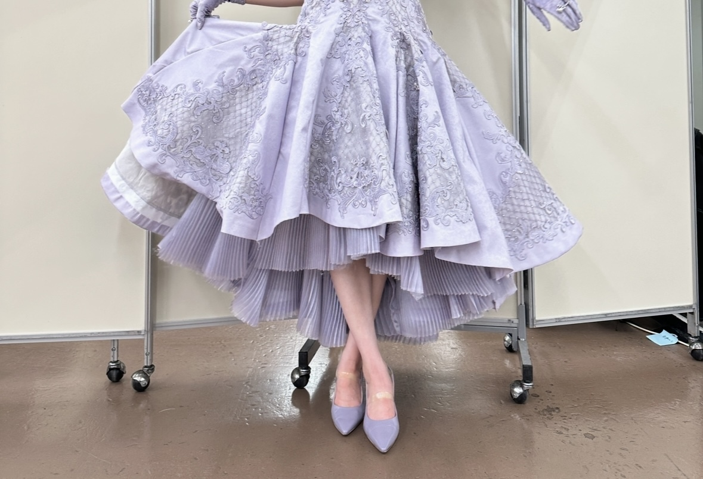
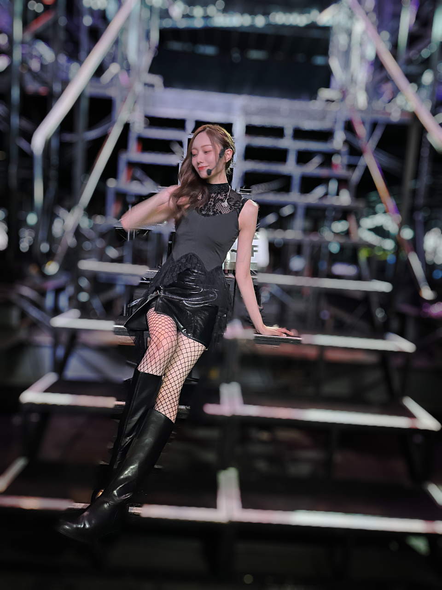
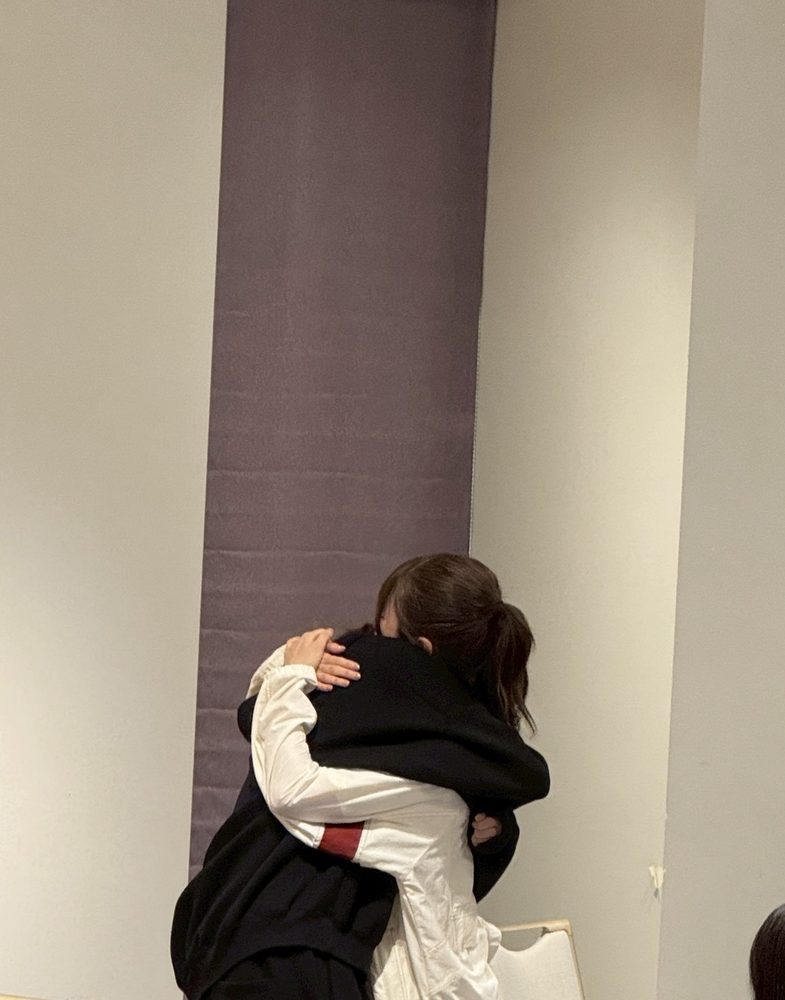
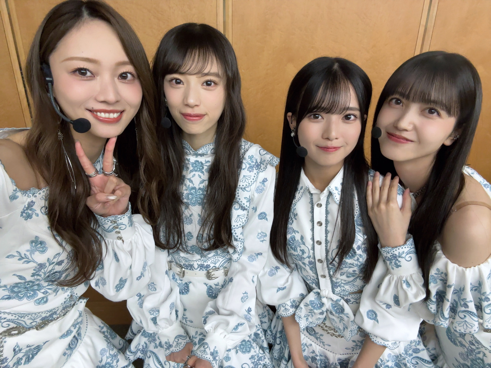
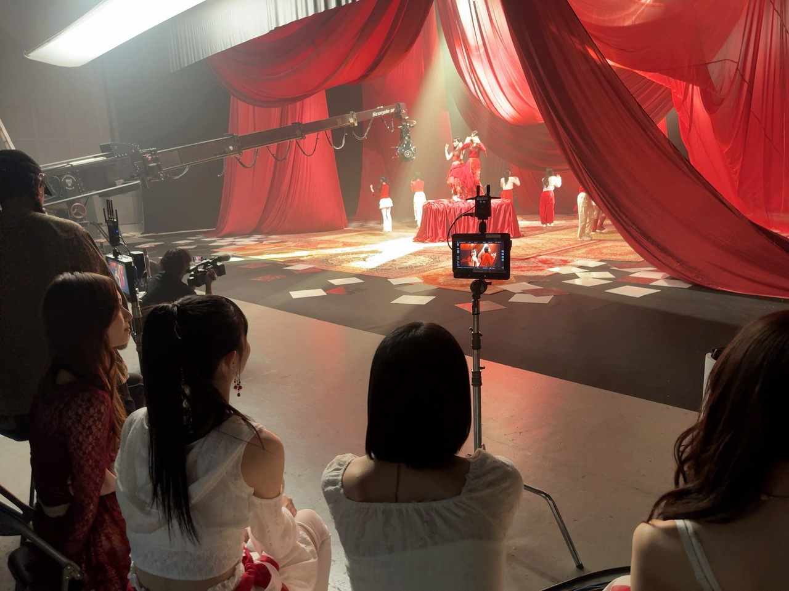

温度感
お久しぶりです。
梅澤美波です！
皆様いかがお過ごしですか？
本日発表になりましたが
第76回 NHK紅白歌合戦
乃木坂46の出場が決定いたしました。
皆様、日々温かい応援を
心からありがとうございます。
私は、先輩方からバトンを受け取ったあの日から
関わるすべての もの こと に対して
なにひとつこぼさず、繋いでいきたいという思いで活動をしてきました。
新しいことへの第一歩よりも
難しい事なのではないかと実感する毎日の中で
そんな積み重ねが、新しい一歩を踏み出すためにも
守ることをなによりも大切にしたいと思っているんです。
この発表を受け、
過去への想いも 今の自分たちへの気持も 未来へと繋げたことへの安心も
色んな想いが溢れて止まらなくてですね、
みんなが同じ気持ちだったのだと、嬉しくなりました(^^)
11年連続出場、身が引き締まる思いです。
変化を続けていきながらの毎日ですが
私たち乃木坂46には 乃木坂らしさが強く宿っていると信じています。
乃木坂チーム皆で
乃木坂らしさを全身にまとい
一年の感謝を、皆様にお届けします。
どうぞ、よろしくお願いいたします！！！！


ショパンが初恋
遅くなりすぎてしまいましたが
真夏の全国ツアー、今年もたくさんの応援
ありがとうございました。
あまりにも暑い夏だったのに
暑さすらもう思い出せなくなっている、、
今年の夏を終え、わたしはとにかく
乃木坂が好きで好きでたまらないんだろうなーーと、思った夏でした(^^)
言葉にすることを恐れず、
この夏をよりよくするために
いい形で終えられるように
それから 自分がこれからも
乃木坂を心から好きであるために、
好きであれるように、好きでいてもらうために、
乃木坂とはどうあるべきか、どう伝えるべきか
とにかくたくさん考えて、たくさん時間をつかった！！
色んな想いを抱えながらステージに向かうみんなの背中を見て
何度も心が、目頭が、熱くなりました。
体現するものは素直なのに
言葉では照れくさくてなかなか素直になれない
愛おしくてたまらないです(^^)
こんなにも頼もしい仲間たちがたくさんいる、
人を思いやる気持ちをたくさん教えてくれる、
一つ一つこぼさず全部見ていたい
あまりにも贅沢すぎる、私の居場所です(^^)
とにかく全身から
ありったけの感謝を伝えたつもりです！！
そんな想いが、大切なファンの皆様へも
届いていたら嬉しいです。

隣にいてくれてありがと副きゃぷっ
40枚目シングル「ビリヤニ」
6期生の2人がセンターを担ってくれます。
活動も始まっていますが
とにかく堂々と、初々しく、真っ直ぐに、向き合ってくれています。
2人にとってこの期間に
少しでも笑顔が多くあれば私たちは嬉しい。
周りからのサポート、手厚くいきます！
何よりも、6期生のみんなが
11人で、たくさん笑っていられる時間があるのなら、それがなによりも一番。
活動は大変なことも多いけれど
乃木坂を好きでいてくれる気持ちが
どうか、どうか増えていきますように。

さて、来年1月にはアルバムも発売になります！
こちらも、制作が進んでおります。
待ちに待った、アルバム！
楽しみにしていてね(^^)
それにしても、
一年でこんなにも環境が
大きく変わっていくものなのね。
ここにいるとより、強く実感しますね。
あなたのここが素敵だとか 好きだとか
必要なんだとか 尊敬していますとか
そういうの、長く共に過ごせば過ごすほど
中々照れくさくて面と向かって言えないんですよね、
だから、ちゃんと伝わっているのかな〜って！思うわけです。
ずっと近くにいた人が
急にパッと周りからいなくなるのとかもう慣れっこで
少し早い段階から
遠くから眺めては いなくなった未来を想像しておく作業とか
平然と一人でいるふりとか
そういうやり方、もうなんとなく身についてきちゃったりしたのよ〜〜
それにしても、今年はたくさんの別れがあったね、あるね、
でも、
どこ見たって未来しかないよ！
私たちは私たちでここにいるから、
みんなで温まって
楽しくいようね(^^)

長く続くグループだからこそ
まずは繋ぐこと、守ること
何ひとつ失いたくないし途切れさせたくない。
強い思いを心にもって挑みます！
表立って喋ること多いくせに
表情が見えないから
また、書きます！
とにかく、たくさん笑っていたい！
Original：https://www.nogizaka46.com/s/n46/diary/detail/104103?ima=4930&cd=MEMBER